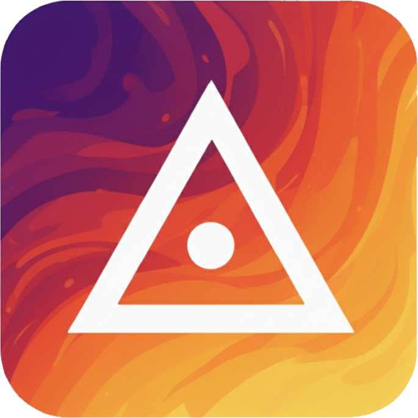

PalamBlock és un sistema de monitorització i control interactiu per a ordinadors d'aula de l'institut de Palamòs. Permet la gestió d'usuaris, el bloqueig de pantalles i un control total del rendiment i ús dels dispositius.
Per configurar els paràmetres, gestionar i supervisar l'activitat, és necessari utilitzar l'aplicació d'escriptori per a professors.
Instal·la PalamMaster